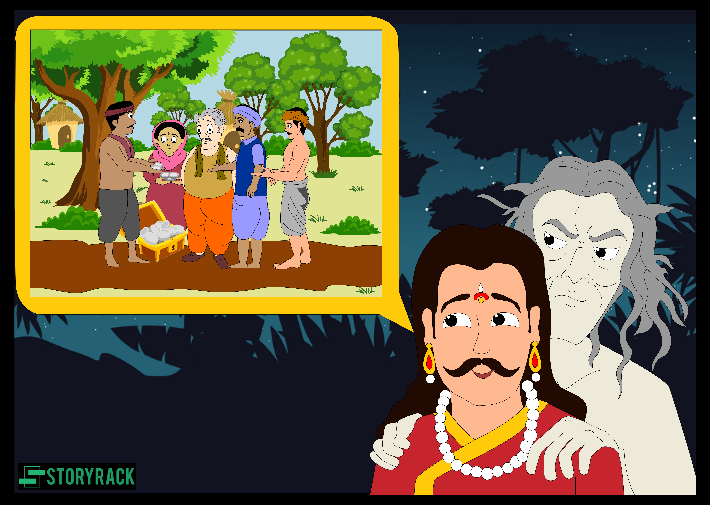

સ્પ્રાઈટે કહ્યું, "રાજા! બરદ્વાન નામનું એક શહેર છે, જેમાં રૂપસેન નામનો રાજા રહે છે. એક દિવસ એવું બન્યું કે રાજા દરવાજા (તેના મહેલના) પાસેના એક એપાર્ટમેન્ટમાં બેઠો હતો, જ્યારે, દરવાજા વગર, કેટલાક લોકોના મોટા અવાજો તેમના સુધી પહોંચ્યા. રાજાએ કહ્યું, 'દરવાજા પર કોણ છે? અને શું અવાજ થઈ રહ્યો છે?' આના પર દ્વારપાલે જવાબ આપ્યો, 'મહારાજ! તમે સરસ પ્રશ્ન પૂછ્યો છે! આને શ્રીમંત વ્યક્તિનું દ્વાર હોવાનું જાણીને, દરેક પ્રકારની વ્યક્તિઓ પૈસાની ખાતર તેની પાસે આવે છે અને બેસે છે, અને વિવિધ વિષયો પર વાતચીત કરે છે; આ તેમનો અવાજ છે. '"
"આ સાંભળીને રાજા મૌન રહ્યા; એટલામાં બીરબર નામનો એક પ્રવાસી, જેનું નામ રાજપીઠ છે, સેવા મેળવવાની આશાએ દક્ષિણ તરફથી રાજાના દરવાજે આવ્યો. દ્વારપાલે તેના સંજોગો જાણીને કહ્યું. રાજા, 'મહારાજ! એક શસ્ત્રધારી માણસ તમારી સેવામાં આવવાની આશાએ આવ્યો છે, અને દરવાજે ઊભો છે: તમારી મહિમાની રજાથી તે તમારી સમક્ષ આવશે.' આ સાંભળીને રાજાએ તેને અંદર લાવવાનો આદેશ આપ્યો. તે ગયો અને તેને લઈ આવ્યો. પછી રાજાએ પૂછ્યું, 'રાજપૂત, હું તને રોજના ખર્ચ માટે કેટલો ખર્ચ આપું?' આ સાંભળીને બીરબરે કહ્યું, 'મને દરરોજ એક હજાર તોલા (લગભગ 833 ઔંસ) સોનું આપો, અને હું જીવી શકીશ.' રાજાએ પૂછ્યું, 'તમારી સાથે કેટલા વ્યક્તિઓ છે (તમારા પર નિર્ભર)?' તેણે જવાબ આપ્યો, 'પરિવાર, મારી પત્ની; બીજો, એક પુત્ર, ત્રીજો, એક પુત્રી; ચોથો, મારી સાથે: મારી સાથે પાંચમી વ્યક્તિ નથી. ' તેની આ વાત સાંભળીને રાજાના દરબારના બધા લોકો મોં ફેરવીને હસવા લાગ્યા; પણ રાજા વિચારવા લાગ્યો કે તેણે શા માટે મોટી રકમ માંગી છે. આખરે તેણે પોતાના મનમાં વિચાર્યું કે, એક વિશાળ આપેલ રકમ કોઈ દિવસ લાભદાયી સાબિત થશે. આ નિષ્કર્ષ પર આવીને તેણે પોતાના ખજાનચીને બોલાવીને કહ્યું, 'આ બીરબરને મારી તિજોરીમાંથી રોજનું એક હજાર તોલા સોનું આપો.'
"આ હુકમ સાંભળીને બીરબરે તે દિવસ માટે એક હજાર તોલા સોનું લીધું, અને જ્યાં તેઓ રોકાયા હતા ત્યાં લઈ આવ્યા, અને તેને બે ભાગમાં વહેંચી, અડધા બ્રાહ્મણોમાં વહેંચ્યા; અને બાકીના અડધાને ફરીથી બે ભાગમાં વહેંચ્યા. તેનો એક ભાગ તીર્થયાત્રીઓ, ભક્તો, વિષ્ણુના ઉપાસકો અને ધાર્મિક ભક્તોમાં વહેંચી દીધો; અને જે એક ભાગ બચ્યો તેમાંથી તેણે ગરીબોને ભોજન રાંધ્યું અને ખવડાવ્યું, અને જે બચ્યું તે તેણે પોતે જ ખાઈ લીધું. તેની પત્ની અને બાળકો નિયમિત રીતે ગુજરાન ચલાવતા. અને દરરોજ રાત્રે તે પોતાની તલવાર અને ઢાલ લઈને રાજાના પલંગ પર ચોકીદારી કરતા અને રાજા જ્યારે ઊંઘમાંથી જાગી જતા ત્યારે બૂમ પાડતા કે, 'કોઈ છે? રાહ જુઓ?' ત્યારે તે જવાબ આપતા, 'બીરબર હાજર છે, તમારી આજ્ઞા શું હોઈ શકે?' જ્યારે પણ રાજાએ બૂમ પાડી ત્યારે તેણે આ રીતે જવાબ આપ્યો, અને ત્યારબાદ, તેણે (રાજા) જે કંઈ કરવાનો આદેશ આપ્યો તે તેણે અમલમાં મૂક્યો."
આ રીતે, સંપત્તિની આતુરતાથી, તે આખી રાત જાગતો રહે છે; ના, ખાવું, પીવું, સૂવું, શાંત બેસવું, અથવા આખા ચોવીસ કલાક દરમિયાન (એટલે કે) ફરતા રહેવું. આઠ ઘડિયાળ), તે તેના સ્વામીને ધ્યાનમાં રાખતો હતો. પ્રથા એવી છે કે જો એક વ્યક્તિ બીજાને વેચે છે તો તે વેચાય છે; પરંતુ નોકર, સેવામાં પ્રવેશ કરીને પોતાને વેચે છે; અને, જ્યારે વેચાય છે, તે આશ્રિત બની જાય છે; અને એકવાર આશ્રિત, તેની પાસે શાંતિની કોઈ સંભાવના નથી. તે કુખ્યાત છે કે; તે ગમે તેટલો હોંશિયાર, જ્ઞાની, વિદ્વાન હોય, તેમ છતાં, જ્યારે તે તેના માસ્ટરની હાજરીમાં હોય છે, ત્યારે તે ભયથી મૂંગી વ્યક્તિની જેમ એકદમ મૌન રહે છે. જ્યાં સુધી તે તેમનાથી દૂર છે, ત્યાં સુધી હું આરામમાં છું. આ કારણે તે વિદ્વાનો કહે છે કે 'સેવકની ફરજો નિભાવવી એ ધાર્મિક ફરજો કરવા કરતાં વધુ મુશ્કેલ છે.'"
| પેજ નંબર ૧૧ | ||